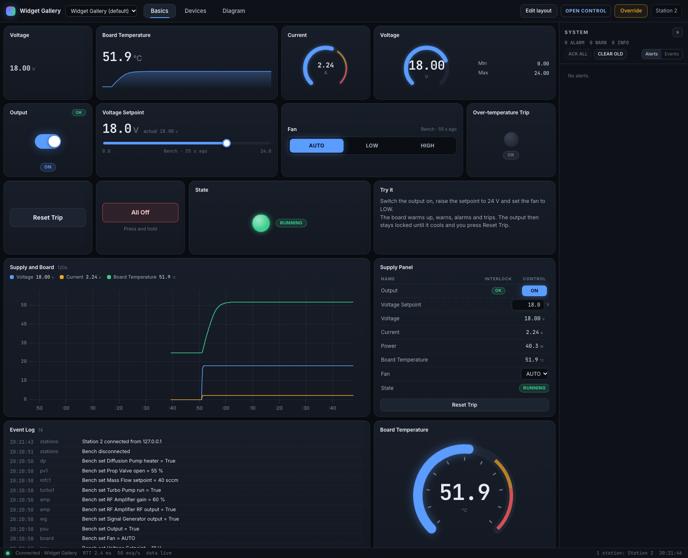

See and control your hardware, without writing a UI.
Describe your devices as named values in Python. NexusUI gives you the screen: readouts, gauges, switches, sliders, trends and alarms, in its own window or in any browser.
# Clone, install, open the widget gallery in its own window.$ git clone https://github.com/jonjenkins31/VisualReactpy.git
$ cd VisualReactpy
$ pip install -e .
$ python apps/widget_gallery/app.py▎
// what it is
A visual way to monitor and control I/O.
A Python library for live control panels: the screen you put in front of a test rig, a bench instrument or an IoT device. Think of what Grafana does for metrics, with controls as well as charts, for your own hardware.

apps/widget_gallery — every general widget, driven by a simulated bench supply
A complete app is a dozen lines. This one opens with a switch for the heater, a slider for the
setpoint and a temperature readout that turns amber at 80 °C and raises an alarm at 95 °C.
app.py
from nexusui import Engine
eng = Engine("My Bench")
heater = eng.channel("bench.heater", "bool", label="Heater", writable=True)
setpoint = eng.channel("bench.setpoint", label="Setpoint", unit="°C",
min=20, max=90, writable=True, initial=50)
temp = eng.channel("bench.temp", label="Temperature", unit="°C",
warn_high=80, alarm_high=95, initial=22)
@eng.loop(hz=50) # your hardware loop, in its own thread
def control(dt):
target = setpoint.value if heater.value else 22.0
temp.set(temp.value + (target - temp.value) * dt / 8) # real code: read the sensor
eng.run() # opens its own window
It is not a general-purpose toolkit. It builds one kind of application, live panels for hardware,
and it draws them with a web view, which costs more memory and CPU than Tkinter or Qt.
The README has the measurements
against Tkinter, Qt and Rust.
// capabilities
What it does today.
Everything on these cards ships in 1.0 and runs in the demo apps.
No UI code
Declare channels and devices in Python, then place ready-made widgets by drag and drop. Layouts are saved as JSON next to your app.
21 widgets
Runs as its own app
python app.py opens a standalone window, private to your computer, with nothing to type into a browser.
window
Or any browser, several at once
Add --browser and any number of laptops, tablets or phones on your network can open the same station. A change on one reaches the others in about a millisecond on a local machine.
multi-station
Checks before hardware
Every write is validated in Python: type, range and your interlocks. One station operates while the others view, and if it goes silent the engine runs your safe-state handler.
interlocks
Hardware never waits on a screen
Control loops run in their own threads. A screen can freeze, disconnect or crash without affecting them.
engine
Device cards and live diagrams
Nine premade device cards, one line of Python each, bring their own channels, commands, safety checks and simulator. Process diagrams are described in Python and drawn live.
devices
// on deck — being researched
Input from outside programs and devices
A way for a microcontroller, a Rust or C++ node, or an existing IoT setup to publish readings into a station over the network: MQTT, ZeroMQ or a plain socket. Today readings come from Python code running inside the engine.
planned
// how it works
One Python engine. One screen, wherever you want it.
The engine owns your hardware and every value. The screen only shows values and asks for changes,
and each change is checked in Python before it reaches hardware.
// your code
The engine
A Python process. Your control loops run in their own threads, and every reading and setting is a named channel with a type, a range, alarm limits and an optional interlock.
// the screen
The UI
Ready-made widgets on a grid you arrange by drag and drop, shown in the app's own window or in any browser. It is React and TypeScript underneath; you only touch that to add a widget the library lacks.
// install
Three steps.
1
Clone
NexusUI is not on PyPI yet, so install it from a clone.
$ git clone https://github.com/jonjenkins31/VisualReactpy.git
$ cd VisualReactpy
2
Install
Python 3.10 or newer. The built screen is included, so you do not need Node.js.
It opens in its own window. Add --browser to serve it at http://localhost:8000 instead.
$ python apps/widget_gallery/app.py
// roadmap
Where it has been, and what is being considered.
0.x — Replaced
ReactPy and ZeroMQ prototypes
The first versions drew the screen in Python on the server. Measured side by side with the rewrite, a click took about 80 ms to show on screen; it now takes under 2 ms.
1.0.0 — Shipped
Engine, widget library, apps that run as apps
The Python engine with interlocks and multi-station control, 21 widgets, live diagrams, the demo apps, and a standalone window by default.
Later
Input from outside programs and devices
MQTT, ZeroMQ or a plain socket, so devices and programs in any language can publish readings into a station. Being researched; useful to support, not scheduled.